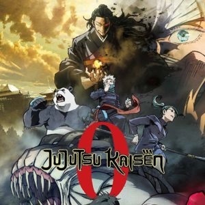
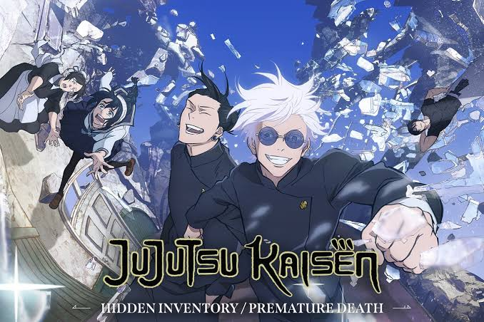
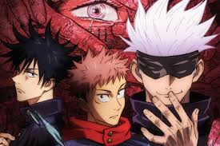

| Orden | Título | Arco | Contenido |
|---|---|---|---|
| 1 |
 Jujutsu Kaisen 0 (Película) |
Precuela | Se centra en Yuta Okkotsu, un estudiante que está maldito por el espíritu de su amiga Rika. Presenta a Satoru Gojo, Suguru Geto y los estudiantes de segundo año como Maki, Panda y Toge. |
| 2 |
 Segunda Temporada |
Arco del Pasado de Gojo (Inventario Oculto/Exterminio Prematuro) | Muestra los eventos de 11 años antes de la historia principal. Narra cómo Satoru Gojo y Suguru Geto realizan una misión para proteger a Riko Amanai, el recipiente de Tengen. También explica el inicio del cambio de ideales de Geto. |
| 3 |
 Primera Temporada |
Arco de Introducción | Yuji Itadori se convierte en recipiente de Sukuna tras ingerir uno de sus dedos. Es reclutado por Satoru Gojo y conoce a Megumi Fushiguro y Nobara Kugisaki. Luchan contra maldiciones menores y aprenden sobre el mundo de los hechiceros. |
| 4 |
Primera Temporada |
Arco de la Maldición de Mahito | Yuji y Nobara enfrentan a Mahito, un espíritu maldito que experimenta con humanos. Presenta a Junpei Yoshino y sus trágicos eventos. Además, se profundiza en la amenaza de las maldiciones aliadas con Geto. |
| 5 |
Primera Temporada |
Arco del Torneo de Intercambio | Las escuelas de hechicería de Tokio y Kioto compiten en un torneo amistoso. Durante el evento, son atacados por maldiciones, y se revelan más detalles sobre la amenaza de Sukuna y Mahito. |
| 6 |
Segunda Temporada |
Arco del Incidente de Shibuya | Un caos masivo tiene lugar en Shibuya cuando Geto y su grupo ejecutan un plan para atrapar a Satoru Gojo. Yuji y sus compañeros luchan contra maldiciones y enfrentan grandes pérdidas. |